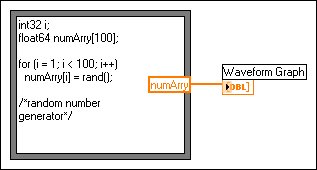

The Formula Node is a convenient text-based node you can use to perform mathematical operations on the block diagram. You do not have to access any external code or applications, and you do not have to wire low-level arithmetic functions to create equations. In addition to text-based equation expressions, the Formula Node can accept text-based versions of if statements, while loops, for loops, and do loops, which are familiar to C programmers. These programming elements are similar to what you find in C programming but are not identical.
|
Note��You can use Formula Node most effectively if you are familiar with the C programming language. LabVIEW Help assumes you are familiar with C and does not contain any topics related to programming in C. Refer to The C Programming Language by Brian W. Kernighan and Dennis M. Ritchie or Teach Yourself C by Herbert Schildt for more information. |
Formula Nodes are useful for equations that have many variables or are otherwise complicated and for using existing text-based code. You can copy and paste the existing text-based code into a Formula Node rather than recreating it graphically.
Formula Nodes use type checking to make sure that array indexes are numeric data and that operands to the bit operations are integer data. Formula Nodes also check to make sure array indexes are in range. For arrays, an out-of-range value defaults to zero, and an out-of-range assignment defaults to nop to indicate no operation occurs.
Formula Nodes also perform automatic type conversion.
The Formula Node, shown as follows, is a resizable box similar to the For Loop, While Loop, Case structure, Stacked Sequence structure, and Flat Sequence structure. However, instead of containing a subdiagram, the Formula Node contains one or more C-like statements delimited by semicolons, as in the following example. As with C, add comments by enclosing them inside a slash/asterisk pair (/*comment*/) or by preceding them with two slashes (//comment).

When you work with variables, remember the following points:
|
Note��The Formula Node does not support complex data types or the matrix data type. If you want to use these data types, use a script node. |